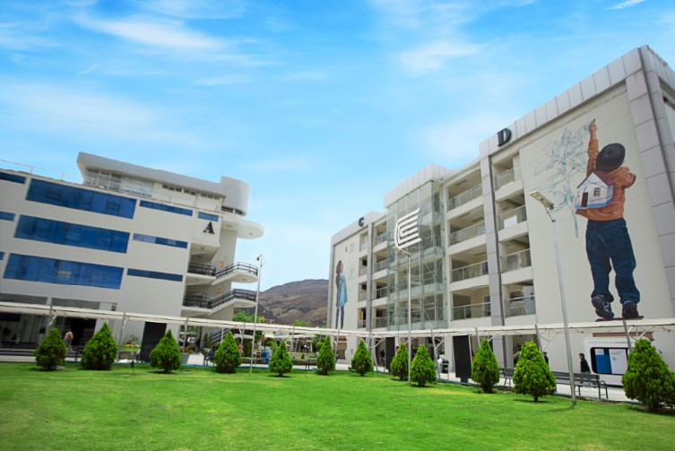

Investiga la realidad
Aprende a formular preguntas, recoger información y analizar fenómenos sociales con rigor.
FACULTAD DE CIENCIAS SOCIALES
Estudia Sociología y aprende a investigar las dinámicas sociales, comprender los desafíos colectivos y proponer soluciones con impacto.

¿POR QUÉ SOCIOLOGÍA?
Conecta ideas, datos y experiencias para interpretar cómo vivimos, nos organizamos y transformamos nuestro entorno.
Aprende a formular preguntas, recoger información y analizar fenómenos sociales con rigor.
Explora temas como cultura, desigualdad, educación, comunidades y políticas públicas.
Desarrolla una perspectiva crítica para colaborar en iniciativas que respondan a necesidades reales.
APRENDER HACIENDO
La formación sociológica combina reflexión teórica, métodos de investigación y trabajo con información para comprender problemas desde distintas perspectivas.
Explorar el programaReconocer contextos, actores y preguntas relevantes.
Usar herramientas cualitativas y cuantitativas.
Comunicar hallazgos y contribuir a decisiones informadas.
TU PRÓXIMO PASO